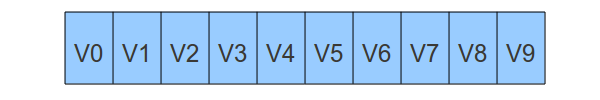
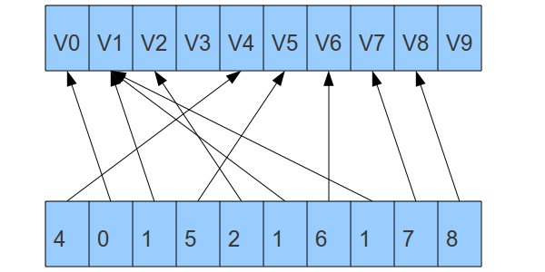
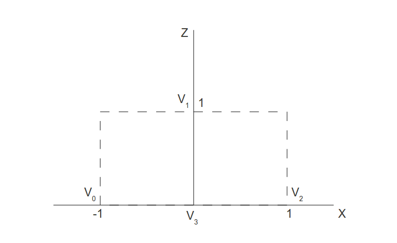

Previous Tutorial
Previous Tutorial
Home
Next Tutorial
Previous Tutorial
Previous Tutorial
Home
Next Tutorial
 |
 |
 |
OpenGL provides several draw functions. glDrawArrays() that we have been using until now falls under the category of "ordered draws". This means that the vertex buffer is scanned from the specified offset and every X (1 for points, 2 for lines, etc) vertices a primitive is emitted. This is very simple to use but the downside is if a vertex is part of several primitives then it must be present several times in the vertex buffer. That is, there is no concept of sharing. Sharing is provided by the draw functions that belong to the "indexed draws" category. Here in addition to the vertex buffer there is also an index buffer that contains indices into the vertex buffer. Scanning the index buffer is similar to scanning the vertex buffer - every X indices a primitive is emitted. To exercise sharing you simply repeat the index of the shared vertex several times. Sharing is very important for memory efficiency because most objects are represented by some closed mesh of triangles and most vertices participate in more than one triangle.
Here is an example of an ordered draw:
If we are rendering triangles the GPU will generate the following set: V0/1/2, V3/4/5, V6/7/8, etc.
Here is an example of an indexed draw:
In this case the GPU will generate the following triangles: V4/0/1, V5/2/1, V6/1/7, etc.
Using index draws in OpenGL requires generating and populating an index buffer. That buffer must be bound in addition to the vertex buffer before the draw call and a different API must be used.
GLuint IBO;
We added another buffer object handle for the index buffer.
Vertices[0] = Vector3f(-1.0f, -1.0f, 0.0f);
Vertices[1] = Vector3f(0.0f, -1.0f, 1.0f);
Vertices[2] = Vector3f(1.0f, -1.0f, 0.0f);
Vertices[3] = Vector3f(0.0f, 1.0f, 0.0f);
To demonstrate vertex sharing we need a mesh which is a bit more complex. Many tutorials use the famous spinning cube for that. This requires 8 vertices and 12 triangles. Since I'm lazy I use the spinning pyramid instead. This requires only 4 vertices and 4 triangles and is much easier to generate manually...
When looking at these vertices from the top (along the Y axis) we get the following layout:
unsigned int Indices[] = { 0, 3, 1,
1, 3, 2,
2, 3, 0,
0, 1, 2 };
The index buffer is populated using an array of indices. The indices match the location of the vertices in the vertex buffer. When looking at the array and the diagram above you can see that the last triangle is the pyramid base while the other three make up its faces. The pyramid is not symmetric but is very easy to specify.
glGenBuffers(1, &IBO);
glBindBuffer(GL_ELEMENT_ARRAY_BUFFER, IBO);
glBufferData(GL_ELEMENT_ARRAY_BUFFER, sizeof(Indices), Indices, GL_STATIC_DRAW);
We create and then populate the index buffer using the array of indices. You can see that the only difference in creating vertex and index buffers is that vertex buffers take GL_ARRAY_BUFFER as the buffer type while index buffers take GL_ELEMENT_ARRAY_BUFFER.
glBindBuffer(GL_ELEMENT_ARRAY_BUFFER, IBO);
In addition to binding the vertex buffer we must also bind the index buffer prior to drawing. Again, we use the GL_ELEMENT_ARRAY_BUFFER as the buffer type.
glDrawElements(GL_TRIANGLES, 12, GL_UNSIGNED_INT, 0);
We use glDrawElements instead of glDrawArrays. The first parameter is
the primitive type to render (same as glDrawArrays). The second
parameter is the number of indices in the index buffer to use for
primitive generation. The next parameter is the type of each index. The
GPU must be told the size of each individual index else it will not
know how to parse the buffer. Possible values here are
GL_UNSIGNED_BYTE, GL_UNSIGNED_SHORT, GL_UNSIGNED_INT. If the index
range is small you want the smaller types that are more space efficient
and if the index range is large you want the larger types. The final
parameter tells the GPU the offset in bytes from the start of the index
buffer to the location of the first index to scan. This is useful when
the same index buffer contains the indices of multiple objects. By
specifying the offset and count you can tell the GPU which object to
render. In our case we want to start at the beginning so we specify
zero. Note that the type of the last parameter is GLvoid* so if you
specify anything other than zero you need to cast it to that type.